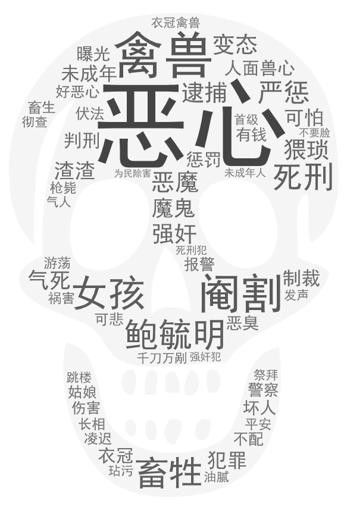
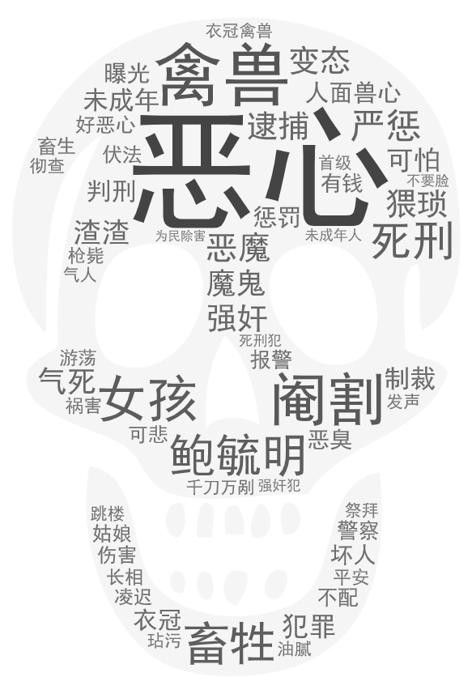
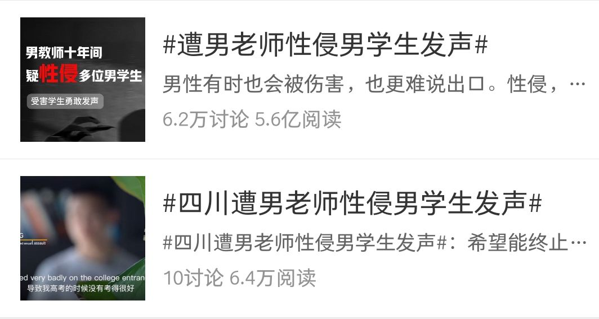
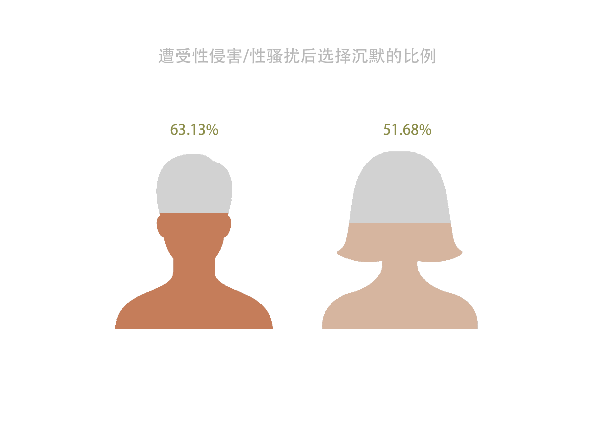

引入
性侵，一个挑动着整个社会神经的敏感词。
这个词让我们一次次看见“恶魔”，一次次愤然讨伐，但悲剧总如东去流水，重演至此不曾停歇。而在众多被我们看到的悲剧里，弱者显而易见，我们往往看见手无寸铁的女性，面对丧尽天良的男性，饱受摧残，而我们鲜少注意到，性侵的受害者不仅仅存在于“她”们之中，同样的，那些“他”们所在的隐秘角落，也需要被同样的光照亮。

The silent "him" ——Side B of a sexual assault victim
我开始沉默，渐渐变得无话可说——向小往
I began to silence, gradually become speechless——Xiang Xiaowang
性侵，一个挑动着整个社会神经的敏感词。
这个词让我们一次次看见“恶魔”，一次次愤然讨伐，但悲剧总如东去流水，重演至此不曾停歇。而在众多被我们看到的悲剧里，弱者显而易见，我们往往看见手无寸铁的女性，面对丧尽天良的男性，饱受摧残，而我们鲜少注意到，性侵的受害者不仅仅存在于“她”们之中，同样的，那些“他”们所在的隐秘角落，也需要被同样的光照亮。

我们从新浪新闻等平台搜集2020年上半年有关“性侵”的报道后，筛选出不重复的40件关于性侵事件的新闻报道，其中关于女性被性侵的新闻报道有36件，而关于男性被性侵的新闻报道仅仅只有4件。
女性被性侵的事件较之男性，更加频繁地出现在媒体的相关报道中，而这些报道，形塑着我们关于现实世界的受害者设想。
在我们随后发布的一份关于性侵的调查问卷里，近九成的人表示了解到的受害者是成年女性和女性儿童，不到一半的人表示了解到的是男性儿童，仅有6.92％的人表示了解过成年男性被性侵的事件。与此同时，在被问到男性遭受性侵的几率是多少时，大多选择的是小概率，而这个概率平均值仅为24.09%。
这说明我们往往认为女性才是性侵事件的受害者，却忽略了一个在人口数量上其实比女性更多的群体所可能面对的威胁。
此外，对于平常接触到的男性被性侵的案件，大多数人表示只了解过一两例，甚至是完全不了解。
不仅如此，对于性侵事件，男性在大多数情况下是大众眼中的戴罪之身，每当有女性被性侵的事件爆出，男性往往成为被声讨的捕猎者，而女性则是需要正义加持和细心保护的羔羊。男性是需要被防备的“狼”，而女性则都需要备上“防狼喷雾”。这些一次次强化了大众脑海中关于两性关系的强弱地位，怜悯和保护的天平近乎垂直。
2020年4月30日，四川省宜宾市高中教师梁某被爆出在十年间猥亵20多名男生。
一篇发布在微信公众号和微博的文章集合了十余位学生的证言，揭露了四川省宜宾市高中教师梁某在十年间对二十几名学生进行长期的性侵害。文中反映，在宜宾、成都两地任教期间，梁某曾多次诱骗学生到心理辅导室、家中进行猥亵。外出开展教育演讲时，梁某还会约见所在城市的毕业学生，以“叙旧”为名进行性侵。

他们中大多是未成年人，部分人受到梁某的侵害长达数年，甚至有的在成年以后，梁某仍对其进行骚扰。事件一经爆出，一时间引起大众哗然，梁某事件让我们再次看见了那个存在已久，但却始终模糊的角落，在这个角落里面是极少被大众注意到的沉默群体——被性侵的男性。男性被性侵以这样方式出现在我们的面前，而在此之前，大多是关于女性被性侵的话题占据了舆论的高地。
可是，梁岗事件真的只是个例吗？答案当然是“不是”。
据中国计划生育协会、中国青年网络、清华大学公共健康研究中心在2019年11月至2020年2月期间共同发起并实施的“全国大学生性与生殖健康调查”显示，女性更容易遭受性骚扰/性侵害，但与此同时，男性被性骚扰/性侵害的比例情况与女性相较也并非是比例悬殊，甚至在一些方面男性受侵害的比例要大于女性。
在过去的20年内，虽然鲜少有男性被性侵的事件被报道，但不报道，并不代表没有。

性侵从来都应该是一种伤害行为，被侵害者可以是SHE，也可以是HE，恶魔无关性别，受害者也不应是一以概之，更不应该引发性别对立和骂战。
与女性不同的是，男性在遭受侵害后大多选择了沉默。
中国青年网络发布的《2019-2020年全国大学生性与生殖健康调查报告》显示，在遭受性骚扰/侵害后，近6成的男生不会向他人诉说或求助，比例远高于女生。

1.家庭性教育的缺失
谈“性”色变，向来已是痼疾，部分家长一直秉持着这样的理念：小孩子知道这些太早了、这些属于“黄色”知识，对孩子的成长会造成伤害、又或者父母本人由于性教育的缺失而对此不了解，也无从解释，甚至很多时候都没有意识到孩子正在经受侵犯……这些原因，让大多数成长中的孩子们在家庭里没有得到应有的性教育，随着近年来越来越多的女性被性侵的事件进入我们的视线，对于女性性教育的呼声越发高涨。但是男孩们，更多时候是角落里的无人问津。
小林一直到长大了之后才知道，当时那种行为是受到了性侵。
小时候家里男孩少，他每次回奶奶家，就会有人来摸他。一个姑姑一见他，就直接扒了他的裤子，而这个人有时候是姑姑，有时候则是其他的亲戚，美曰其名“检查身体”，大人们讲荤段子时一阵一阵的笑声，和他光着屁股灰溜溜难为情的样子一起，留在了他的脑海里。
“我爸妈觉得好像是一件很平常的事情，没有任何反应”。
父母的不管不顾和毫不在意曾一度让他以为童年本该如此度过，他一直以为这只不过是一件稀松平常的事情罢了，而哭泣的声音和羞耻感却伴随着儿时难堪的记忆一直走到了如今。
只是我们有没有想过，孩子一代代长大，如果家庭性教育总是缺席，是否会给孩子带来更多的恶果呢？家庭性教育的缺位一幕幕重复上演，是否也会给孩子带来循环往复的魔咒呢？
3.法律制度并不完善
2012年12月5日，郑州一公交车长为筹钱开公司，与其同性恋男友(在校大学生)绑架一名17岁男生，向其家长索要10万。其间，两人多次对性侵犯男生。检察官表示，强奸罪的犯罪对象是“妇女”和“幼女”，不包括男性，所以不能认定为强奸罪。
时至今日，国内对遭受性侵的男性受害者的相关法律政策，仍处于不完善的状态。
我国《刑法》第二百三十六条【强奸罪】规定：以暴力、胁迫或者其他手段强奸妇女的，处三年以上十年以下有期徒刑。也就是说我国刑法中，强奸罪的被害主体为“女性或者未成年人”，男性遭受准性侵行为时无法用法律维权。
男性虽说被纳入强制猥亵罪和侮辱罪的犯罪像，但是这也将针对男性的准性侵行为和猥亵行为混为一谈，将严重性侵罪--强奸罪按照属于较轻性侵犯罪--猥亵罪判处。
从这个层面来讲，男性仍没有获得与女性同等的法律保护。
2.“男强女弱”观念的根深蒂固
传统的观念认为，在两性关系中，男性是占据主导权的一方，他们比起女性更有说“不”的权利，男女生理结构和力量差异往往让人忽略了男性可能处于弱者的处境
男性体力要更优，所以他受到的伤害应当更少，“男儿有泪不轻弹”、“男儿膝下有黄金”，在男权社会所主导的刻板印象下，男性就应该是刚强的、坚毅的、打碎了牙往肚子里咽下的。稍微不符合大众的性别印象，就会被叫做“娘娘腔”、“娘炮”，而这种现象对两性双方其实都是一种伤害。
正是由于大众对于男性的偏见和歧视，男性受害者作为一个少数群体更加羞于开口，让男性受害者这一群体默不发声。受害者是不分性别的，性侵案件也不该被性别化对待，对男性的保护应当是等同的。因为社会上的偏见，和男孩自身的羞耻心，被性侵成为一段隐秘的过往。
4.羞于开口，求助无门
金海回忆起初中时期的被侵犯的经历，至今仍总是犯恶心。
狭窄的服装店，肥头大耳的卖裤子的大叔，以帮他量腰围为由向他伸出了手，在他的腰间有意无意摩擦触碰，他突然脱下了自己的裤子，接着便向金海的性器官伸手，他意识到事情有些不对，吓着赶忙跑开。
“我从没对别人讲过这件事，觉得很羞耻，我只是之后都绕着那家店走。”
之所以选择说出来，他说，太多人不说了，而我说出来，希望有那么一点点用处，男孩子也要被保护。
又还有多少金海在沉默呢？
在梁某性侵案中，当事人之一杨树在接受CGTN的采访时表示，因为对法律的不了解，以及羞于开口，加上不知道自己可以做何选择，找何人求助，所以当时并未揭露这一事件。
而在知乎“男性被性侵”的话题下，答题者寥寥，即使有，也大都选择了匿名。
2011年，纽约一位21岁的大学生Grace Brown发起的一个名叫《TA强奸我时说的话》的摄影集
图源：她视界
事实上，被性侵的男生，不仅身体上会受到创伤，而且心理上也会受到极大的创伤，性取向产生问题、不愿与他人接触、厌恶自己的身体、对性生活的态度或多或少会扭曲，产生恐惧或是排斥心理、形成心理疾病比如抑郁症，甚至由心理疾病引发的自残自杀等倾向等等，这些都是不容忽视的。
在世界范围内，这个“隐秘的角落”似乎正在一点一点被照亮。
2005年，挪威出现首例判决女性强奸男性犯罪成立的案例。
2012年，韩国法律将男性列为性犯罪受害人的范围。
2012年，美国联邦调查局将男性列为“强奸受害人”的范畴。
而我国也在2015年，将原来的强制猥亵妇女罪修改为强制猥亵他人罪 ，扩大了保护主体范围，打破了被害人性别的限制，不仅包括妇女，还包括十四周岁以上的男性。
但同时，我们应该意识到，我国还未真正实现对于男性与女性给予同样的保护。现行《刑法》中对强奸的定义还只针对女性，强奸未满十四周岁男童和十四周岁以上的男性未成年人只能分别按照猥亵儿童罪和猥亵他人罪论处，对于强奸行为按照猥亵罪处理无疑将会轻纵犯罪人。
法律的漏洞需要被改进，才能让更多的坏人受到制裁；合理的性启蒙观念和正确的性教育需要被普及，才能减少更多受害者的出现；而大众也需要正确看待受害者，才能防止他们被二次伤害，社会公众应该以更加冷静、平等的方式对男性受害者予以关注。
性教育不分男女，防性侵教育更是如此。
希望在未来，“隐秘的角落”能够被光照亮！